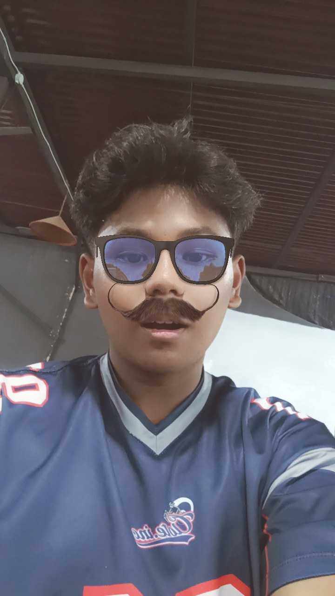

Pahami Dasar
Belajar dasar desain, multimedia, dan teknologi informasi agar fondasi visual serta teknis kuat sejak awal.
TIK / TEKNOLOGI REKAYASA MULTIMEDIA / 2026
Jurusan TIK dengan program studi Teknologi Rekayasa Multimedia mempersiapkan mahasiswa untuk menciptakan konten digital, visual storytelling, animasi, desain interaktif, dan produk multimedia yang relevan dengan kebutuhan industri masa kini.
Pelajari Lebih Lanjut ↓00 / PROFIL SAYA

TIK SELECT
Mahasiswa jurusan ini dibekali keterampilan kreatif dan teknis untuk merancang komunikasi visual, merekam dan mengolah media, serta membangun pengalaman digital yang memikat audiens.
03 / ALUR
Belajar dasar desain, multimedia, dan teknologi informasi agar fondasi visual serta teknis kuat sejak awal.
Mahasiswa mengembangkan kemampuan produksi media, editing, animasi, audio, dan pengalaman digital berbasis proyek.
Menjadi kreator digital, editor, desainer, animator, atau profesional komunikasi visual yang siap masuk industri.
02 / KOMPETENSI
Program ini menggabungkan kreativitas, teknis, dan strategi komunikasi untuk menghadirkan solusi multimedia yang siap dipakai di industri desain, produksi video, animasi, branding digital, dan pengembangan konten interaktif.
04 / VISI
Menyiapkan lulusan yang mampu menciptakan inovasi media digital, desain visual, dan pengalaman interaktif berbasis teknologi untuk kebutuhan industri dan masyarakat.
05 / MISI
Melalui pembelajaran berbasis industri, riset, serta penguatan karakter, mahasiswa dibekali kemampuan teknis dan profesionalisme dalam bidang multimedia.
06 / PROSPEK KERJA
Lulusan dapat berkarier sebagai desainer komunikasi visual, editor video, animator, fotografer, art director, content creator, hingga profesional multimedia di perusahaan digital.
07 / ALUMNI
Alumni Teknologi Rekayasa Multimedia Politeknik Negeri Lhokseumawe berkontribusi di bidang media kreatif, perusahaan teknologi, agensi digital, pendidikan, dan industri budaya kreatif.